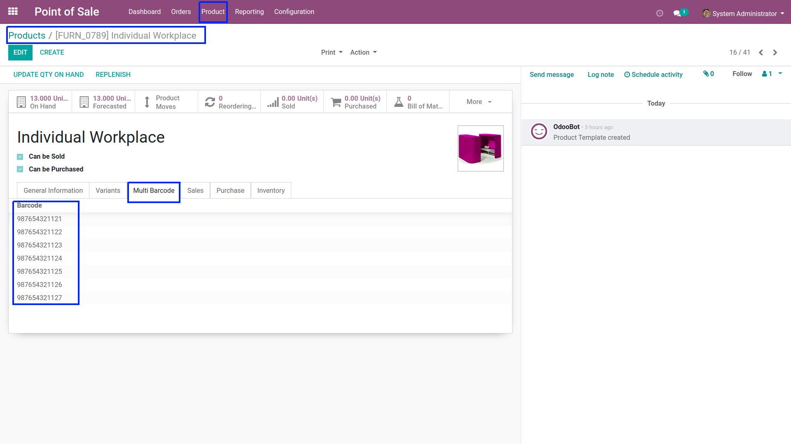
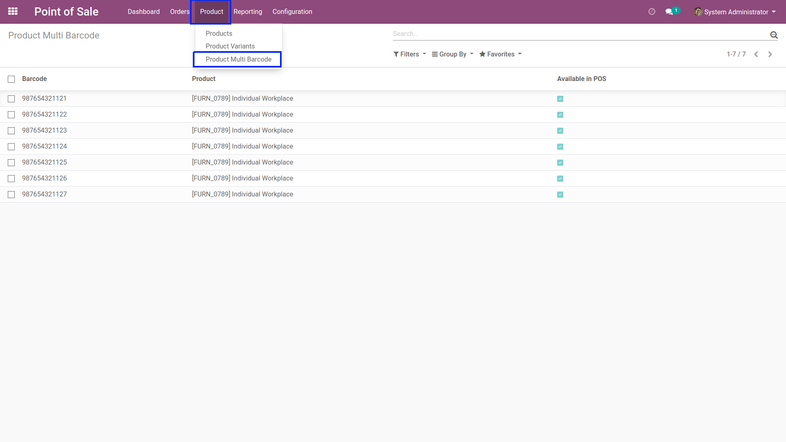
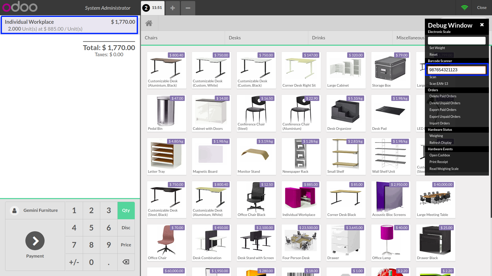

POS Multi Barcode(Community & Enterprise)
Multi barcode add option in Product in POS. Here you can add mulitple barcode for a Product.

View of Barcode added in Product.

Here in POS session scan barcode from barcode scanner and it will fetch the product and every scan it will add product quantity.
